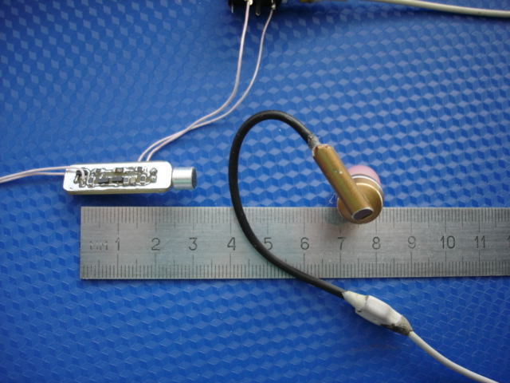
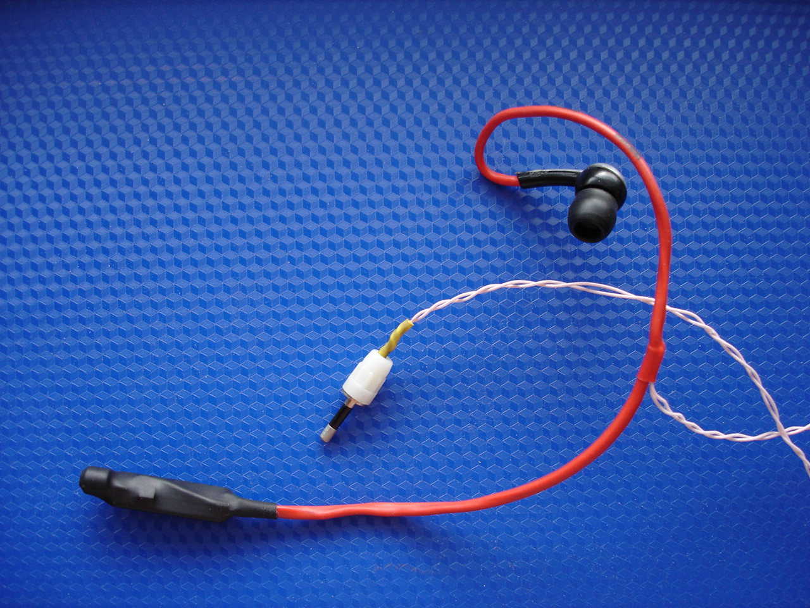

Гарнитура подойдет, если приходится разговаривать по проводной телефонной линии, при этом что-то просматривая на компьютере.. Прижимать трубку к уху, конечно, удобно, но не так, чтобы очень.
Профессиональные
гарнитуры дороги, великоваты и наушник закрывает ухо - омфортнее с вакуумным наушником.
Схема гарнитуры выполнена на
основе схем разных проводных телефонов-трубок.
Работа
гарнитуры:
предполагается,
что где-то стоит телефон, когда он звонит, гарнитура подключается к
телефонной сети, сеть воспринимает это как снятие трубки, по окончании
разговора гарнитура отключается от сети (можно поставить тумблер)
ДЛЯ ПРОСМОТРА ПОЛНОМАСШТАБНОГО ИЗОБРАЖЕНИЯ КЛИКНИТЕ ПО КАРТИНКЕ
Микрофон электретный, диаметром 6мм
телефонная сеть подключается к контактам 1,2 (полярность не имеет значения)
наушник подключается к контактам 3, 4.
К схеме можно подключить и номеронабиратель, который будет управлять транзисторами VT1, VT2, но в этом случае эти транзисторы и диоды VD1, VD2 надо заменить на более высоковольтные
Использование SMD позволило изготовить малогабаритную плату.
Как
видно на картинке, использованием кусочка термоусадки (черный отрезок)
части провода наушника придана форма уха и
добавлена
жесткость - наушник не просто вставляется в ухо, а обрамляет
ухо.
Вид платы сверху и снизу

ЗДЕСЬ
в серии картинок показано, как изготовить ДВУСТОРОННЮЮ печатную плату
на примере платы для гарнитуры